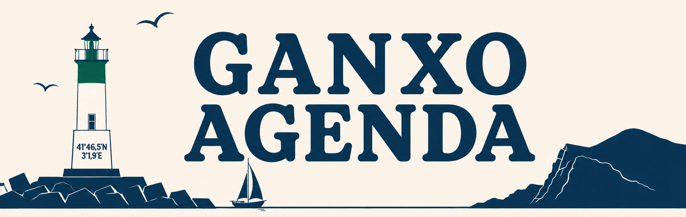

—°
Carregant...
Temps per dies
Avui
—
Demà
—
—
—
Avui
Demà
Cap de setmana
Amb nens
Juny
Avui a Sant Feliu
—
Carregant...
Avui no hi ha esdeveniments publicats.
Tots els esdeveniments
Informació útil
Farmàcia de guàrdia
Avui · Farmàcia Sant Joan
Bus i tren
Horaris cap a Girona i Barcelona
Recollida de residus
Avui: orgànica
GUIA
Sant Feliu en 48 hores
Tot l'essencial si véns un cap de setmana
Descobreix
Les 5 millors cales
El camí de ronda
On menjar peix fresc
El Monestir
ESPORTS
Regata de llaguts catalans
Part de: Festa de la Mar
Esdeveniment a l'aire lliure. Avís de pluja per a aquesta tarda — pot patir canvis.
Quan
Dij 11 · 19:00
On
Port · Club de Rem
Preu
Entrada lliure
Organitza
Club de Rem
Descripció
La tradicional regata de llaguts de vela llatina torna al passeig del mar.
Recorda-m'ho
Compartir
Altres plans aquest dia
Veure tots els plans del cap de setmana
GUIA
Sant Feliu en 48 hores
Tot l'essencial per descobrir Sant Feliu de Guíxols en un cap de setmana: platja, passeig, monestir, gastronomia i una escapada pel Camí de Ronda.
Dia 1 · El cor del poble
Porta Ferrada · Monestir
Matí — Comença al Monestir de Sant Feliu, nucli històric de la vila. Passeja per la Plaça del Monestir i la Porta Ferrada, la portalada romànica que dona nom al festival d'estiu.
Passeig del Mar
Migdia — Baixa fins al Passeig del Mar, amb les seves icòniques arcades de farola i el mirador sobre la platja. Bon moment per dinar a una terrassa amb vistes.
Platja de Sant Feliu
Tarda — Temps de platja: ampla i urbana, amb tots els serveis. Si busques tranquil·litat, camina cap a l'extrem de llevant, a tocar del port.
Nit — Sopar de peix fresc a la zona del port o a la Plaça del Mercat, i una passejada nocturna pel passeig il·luminat.
Dia 2 · Camí de Ronda i cales
Camí de Ronda
Matí — Comença l'etapa del Camí de Ronda cap a S'Agaró: un recorregut espectacular vora els penya-segats, amb vistes a cales amagades com Sant Pol.
Migdia — Para a la Cala Sant Pol o continua fins als Jardins de Cap Roig. Bany a una cala recòndita abans de tornar.
Tarda — Torna cap al centre i visita el Museu d'Història de la Ciutat, ideal per entendre el passat industrial (suro) i mariner del poble.
Nit — Acaba el cap de setmana amb un gelat al passeig, mentre es pon el sol darrere la badia.
També et pot interessar
Les 5 millors cales
On menjar peix fresc
Agenda
De visita
Pràctic